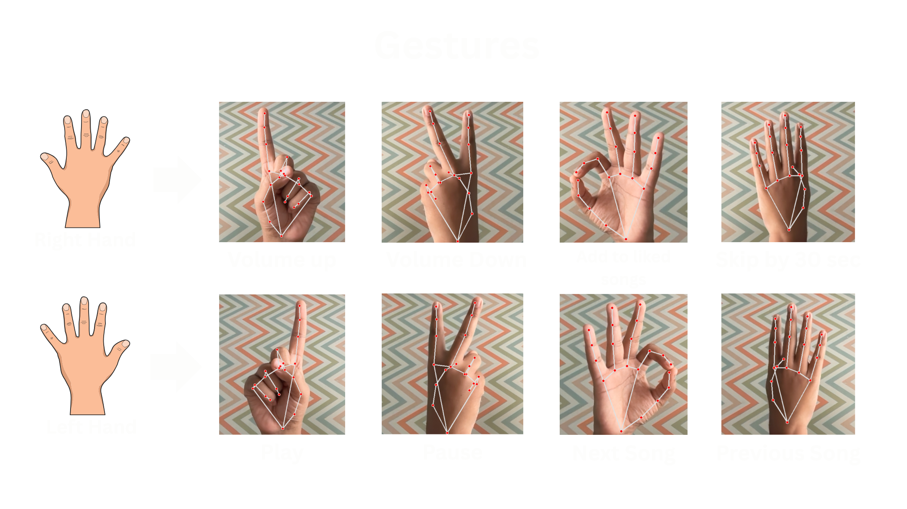

Live Camera Feed
📷 Camera is off
Click camera button to start
Click camera button to start
🎭 Current Gesture
No gesture detected
😊 Current Emotion
No face detected
Neutral:
Happy:
Sad:

⚙️ Controls
📹 Camera
🎭 Gesture Recognition
😊 Emotion Detection
🎨 Style Radio
🎵 Mood Radio
💡 Recommendation Model